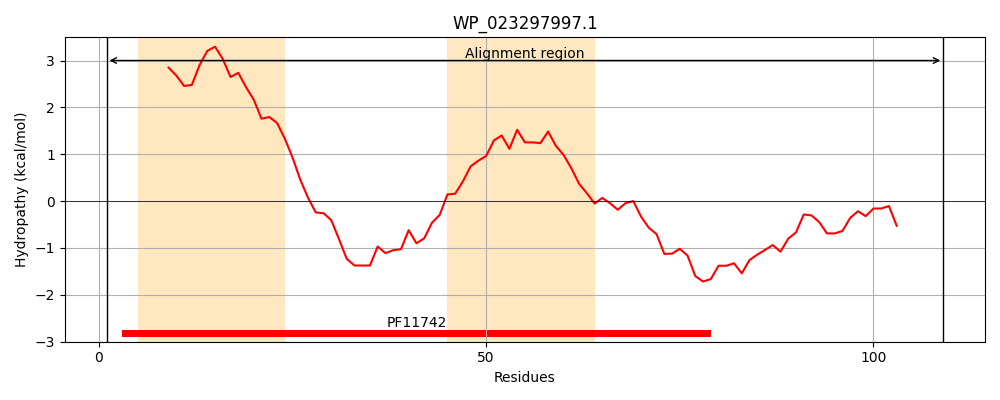
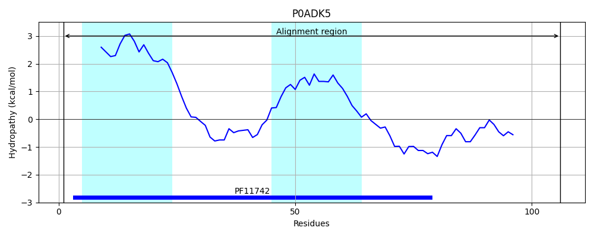
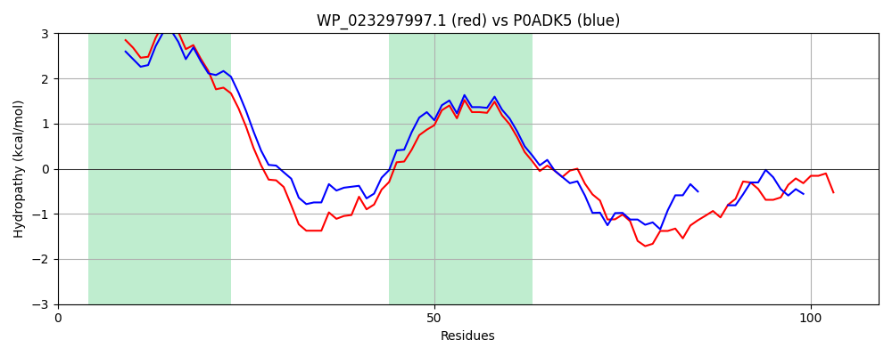

Hit Accession: P0ADK5
Hit TCID: 9.B.32.1.2
Hit Description: gnl|BL_ORD_ID|8754 gnl|TC-DB|P0ADK5|9.B.32.1.2 Inner membrane protein yiaW OS=Escherichia coli O157:H7 GN=yiaW PE=3 SV=1
Mach Len: 109
e:0.000000
Query TMS Count : 2
Hit TMS Count: 2
TMS-Overlap Score: 2.000000
Predicted Substrates:None
BLAST Alignment:
| Protein Hydropathy Plots: | |
|---|---|
|  |  |
Pairwise Alignment-Hydropathy Plot: | |
|  | |